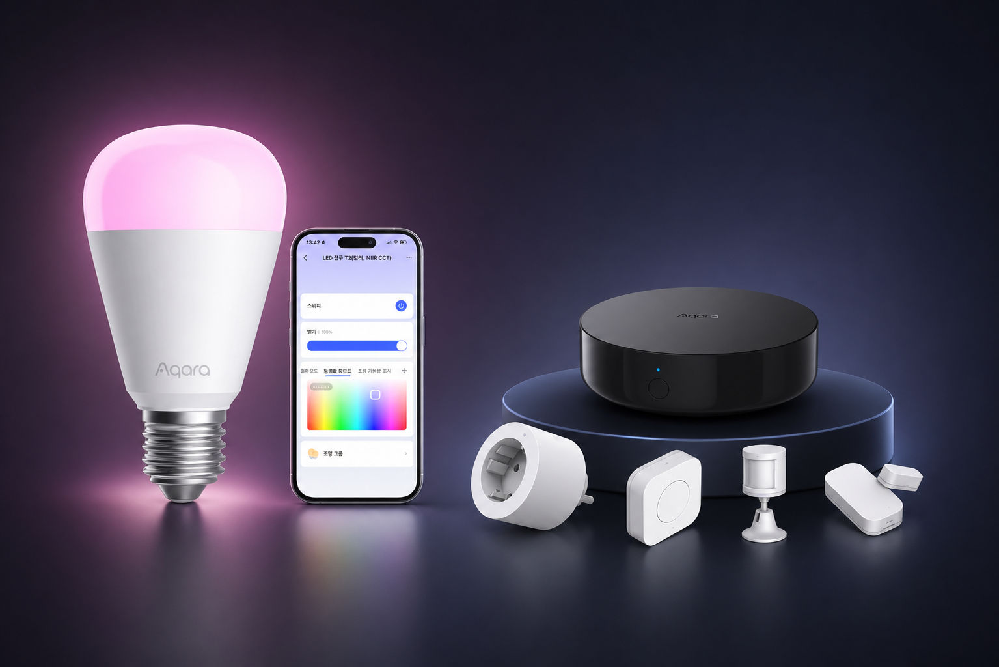
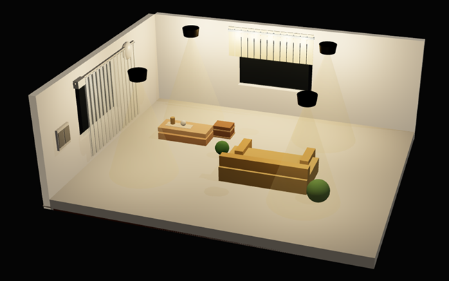
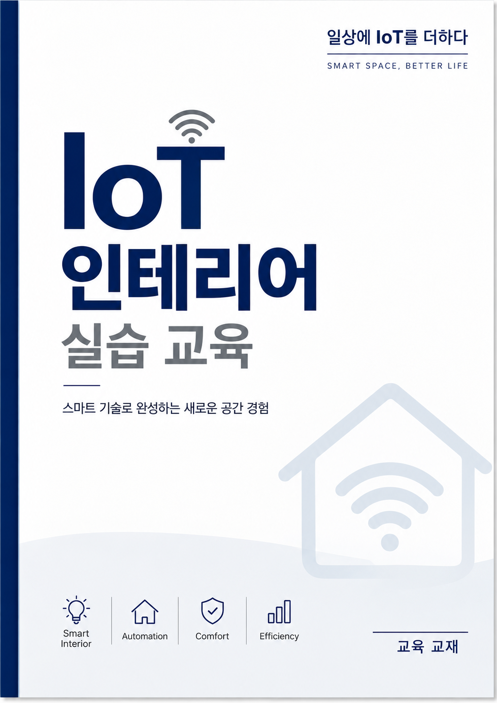

아카라 홈키트
허브와 키트 내 장치를 연결하고, 센서 입력이 자동화 조건으로 이어지는 흐름을 익힙니다.
UNIVERSITY × SPACE × IoT
아카데미 / AIoT 인테리어 실습 교육 교재 상세
실내건축·디자인·주거환경 전공을 위한
대학 연계 IoT 공간디자인 교육
실제 기기를 연결하는 첫 실습부터
자신의 설계 작품에 IoT를 적용하는 캡스톤까지.
버튼을 눌러 공간 반응 개념을 살펴보세요. 실제 기기 연결 화면은 아닙니다.
ONE CONNECTED PROGRAM
교육패키지, 학생 실습교육, 학기 중 특강,
캡스톤 멘토링을 하나의 상품으로 제공합니다.
아카라 홈키트와 RGB 전구,
스탠드 조명·조명 소켓으로
직접 실습할 환경을 준비합니다.
기기 연결과 조명 제어를 배우고,
센서 조건에 따라 작동하는
자동화를 직접 구현합니다.
공간과 기술이 만나는 사례를 통해
전공 과제에 적용할 수 있는
설계 관점을 확장합니다.
캡스톤 진행 시 멘티를 연계하고,
아이디어를 설계와 구현으로
구체화하도록 자문합니다.
조명 연출, 사용자 동선, 센서·장치 배치와 공간 경험
생활행동, 주거 편의, 사용자별 생활 시나리오
디자인 의도를 실제 공간의 반응으로 표현하는 방법
01 / EDUCATION PACKAGE
네 가지 구성품으로 기기의 연결부터
조명 연출과 자동화까지 경험합니다.

허브와 키트 내 장치를 연결하고, 센서 입력이 자동화 조건으로 이어지는 흐름을 익힙니다.
밝기·색온도·색상에 따라 달라지는 공간의 인상을 비교하고 조명 장면을 설계합니다.
조명을 실제 공간에 적용하고, 빛의 위치와 사용 목적이 만드는 경험을 확인합니다.
전구를 연결해 점등하고, 조명 제어와 배치 실습에 활용합니다.
키트 수량, 제품 모델, 스탠드·소켓의 세부 사양은 학과 운영 방식에 맞춰 제안서에 명시합니다.
02 / HANDS-ON CLASS
처음 접하는 학생도 기기를 연결하고,
자신이 정한 조건으로 조명을 제어하도록
단계별로 실습합니다.
아래는 4시간 기준 권장 진행안입니다.
학생 수준과 수업 환경에 따라 세부 순서를 조정합니다.
허브·센서·조명의 역할을 알아보고, ‘조건 → 실행’으로 이어지는 자동화 구조를 이해합니다.
학습 결과 · 장치별 역할 설명장치를 등록하고 연결 상태를 확인합니다. 스마트폰으로 직접 제어하며 기본 동작을 익힙니다.
학습 결과 · 장치 연결 및 수동 제어RGB 전구와 스탠드 조명으로 밝기·색온도·색상을 비교하고, 학습·휴식 등 목적에 맞는 장면을 만듭니다.
학습 결과 · 목적에 맞는 조명 장면키트 센서를 활용해 조건과 실행을 설정합니다. 의도한 대로 작동하는지 확인하고 실습 결과를 공유합니다.
학습 결과 · 자동화 시나리오 구현·설명03 / SPECIAL LECTURE
학기 중 하루, IoT가 공간디자인에 어떻게 적용되는지 전공과 연결해 살펴보는 특강입니다.
사용자 행동과 공간 목적에 따른 자동화 사례
조명 장면, 동선, 센서 위치를 함께 생각하기
주거·실내공간 과제와 IoT 적용 아이디어 연결
특강 일정과 주제는 학과의 수업 계획에 맞춰 협의합니다.
04 / CAPSTONE MENTORING
캡스톤디자인 진행 시 멘티를 연계해 학생 프로젝트에 필요한 IoT 설계·구현 방향을 자문합니다.
대상 사용자, 공간의 문제, 적용 아이디어 검토
장치 구성·배치와 자동화 조건 구체화
구현 방향, 동작 확인 기준과 개선 사항 자문
멘티 연계 방식, 일정, 횟수와 지원 범위는 캡스톤 계획에 따라 협의합니다.
FROM DEVICE TO SPACE
기존 아카데미에서 활용하는 교재와 IoTPlacement로
장치의 위치와 공간 적용을 함께 살펴볼 수 있습니다.


기존 교육 교재와 설계 도구를 수업에 연계합니다. 제공 자료와 시뮬레이터 이용 범위·기간은 도입 제안 시 안내합니다.
공간디자인·소비자학과 등 관련 전공 학생을 대상으로 썬스타와 아카라라이프가 교육을 진행했습니다. 공간 시나리오 설계와 실제 IoT 기기를 활용한 자동화 실습, 쇼룸 체험이 소개됐습니다.
START YOUR PROGRAM
도입 상담부터 키트 준비, 교육 운영,
캡스톤 연계까지 순서대로 정리합니다.
학과·학년·인원과 전공 수업의 목표를 확인합니다.
키트 수량, 실습 일정, 특강 시점과 견적을 정합니다.
실습 환경을 점검하고 계획한 학생 교육을 진행합니다.
캡스톤 진행 시 멘티를 연계하고 자문 범위를 정합니다.
QUESTIONS & ANSWERS
기기 연결, 앱 제어와 자동화 조건 설정을 중심으로 진행합니다. 공간 전공 학생이 사용자 경험과 설계 의도를 실제 동작으로 연결하도록 구성하며, 세부 난이도는 학생 수준에 맞춰 협의합니다.
학생 실습교육은 1회 최대 15명 기준입니다. 전체 참여 인원이 더 많으면 분반 또는 추가 회차를 협의합니다. 2시간 특강의 참여 인원은 강의 공간과 운영 방식에 따라 별도로 정합니다.
키트 공급 수량과 개인·팀별 실습 방식은 학과의 운영 계획에 따라 정합니다. 개인별 지급 또는 학과 공용 등 공급·소유 조건은 최종 제안서와 견적서에 명시합니다.
특강은 학기 중 하루 2시간으로 편성합니다. 멘토링은 캡스톤디자인 진행 시 멘티를 연계하는 방식이며, 일정·횟수·참여 팀과 자문 범위는 프로젝트 계획에 맞춰 협의합니다.
확정된 네 가지 구성을 기준으로 키트 수량, 실습 회차, 교육 장소와 멘토링 범위 등을 확인해 통합 견적을 안내합니다. 교재와 시뮬레이터 이용 조건, 출장 등 부대 비용도 제안서에서 함께 확인할 수 있습니다.
LET’S DESIGN THE NEXT CLASS
학과와 학생에게 맞는 IoT 교육을 준비해 보세요.
교육 목적과 일정을 알려주시면 구성과 견적을 안내합니다.